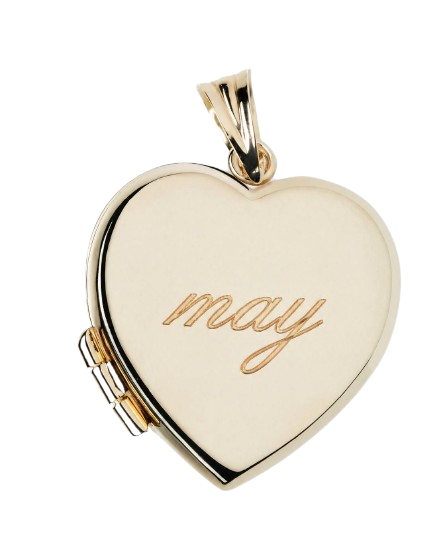
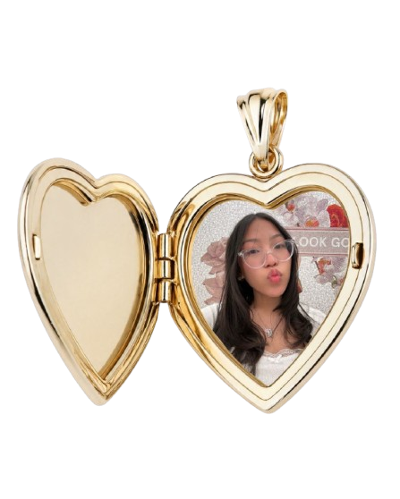

Hi, I am Maylin. I am a freshman planning to major in graphic design, with a strong interest in visual marketing and how design influences the way people see and connect with brands. I am drawn to design because it combines creativity with communication.
Outside of digital design, I enjoy creative activities such as scrapbooking, lettering, fashion, and photography. These interests influence my design process by encouraging experimentation with composition, texture, and style.